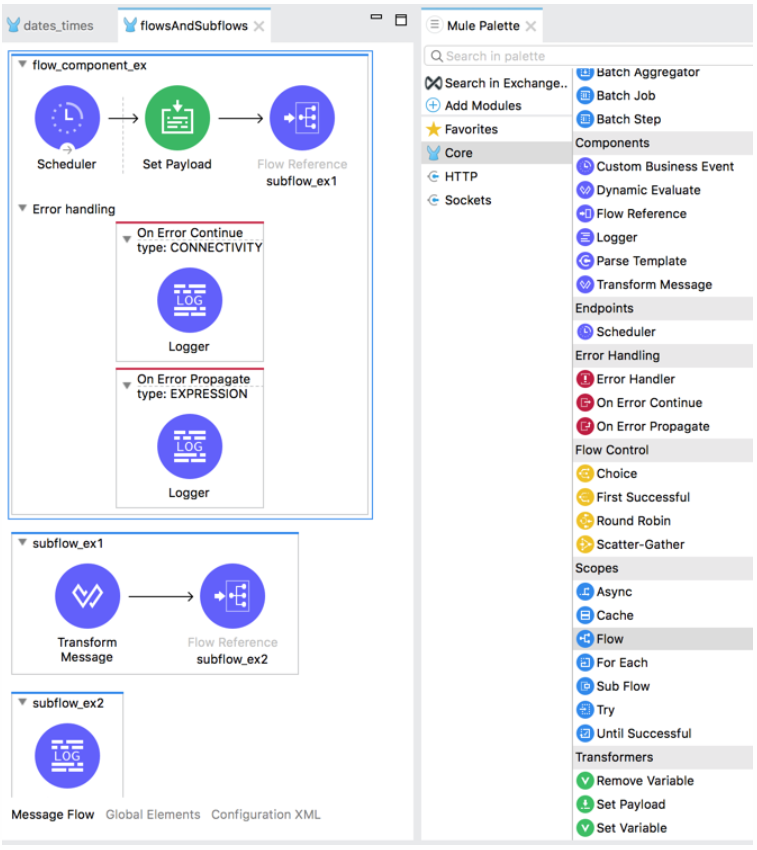
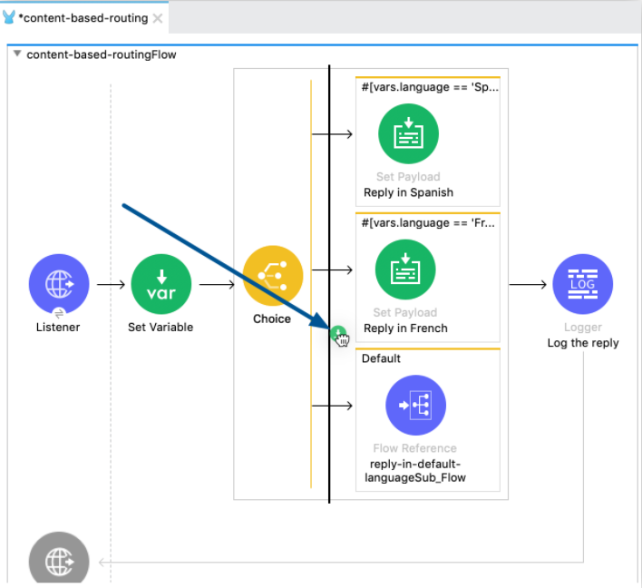
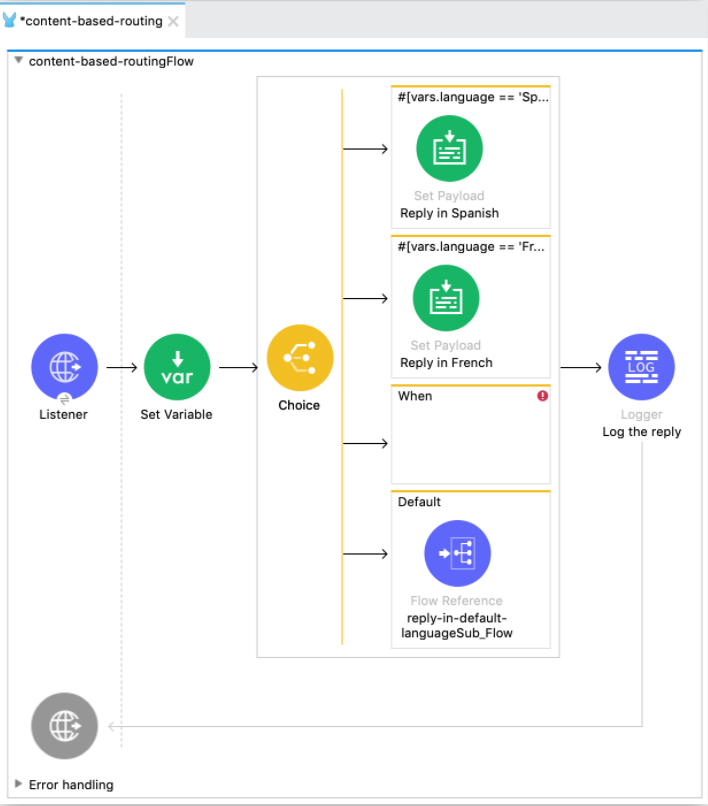
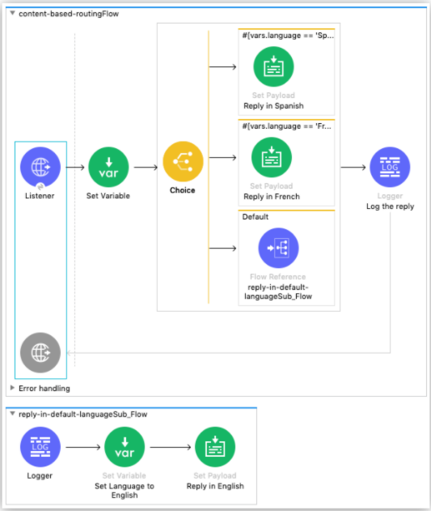

Flow和SubFlow组件
1、Flow组件和SubFlow组件
Flow组件和SubFlow组件是将其他一系列核心组件和操作组合在一起的组件。
Flow组件是mule应用程序的基础。
因为所有mule应用程序都必须包含至少一个flow，因此Anypoint studio会自动提供mule应用程序的第一个flow组件。
mule应用程序可以包含额外的flow和subFlow。如下：

带有subFlow的Flow
2、Flow和SubFlow的XML
此示例显示了一个简单流 ( <flow/>)的 XML，该流使用调度程序作为源，每 10 秒触发一次流的执行.
通过 Flow Ref ( <flow-ref/>) 组件连接到子流 ( <sub-flow/>)。
然后该子流连接到另一个子流，同样使用 Flow Ref 组件。请注意，当您通过 Studio UI 配置组件时，Studio 会自动将 XML 添加到您的 Mule 应用程序的配置 XML。
Flow和SubFlow的XML配置：
<flow name="flow_component_ex">
<scheduler doc:name="Scheduler" >
<scheduling-strategy >
<fixed-frequency frequency="10" timeUnit="SECONDS"/>
</scheduling-strategy>
</scheduler>
<ee:transform doc:name="Transform Message">
<ee:message >
<ee:set-payload ><![CDATA[
%dw 2.0
var myXml = read('<prices>
<basic>9.99</basic>
<premium>53</premium>
<vip>398.99</vip>
</prices>', 'application/xml')
output application/xml
---
myXml
]]></ee:set-payload>
</ee:message>
</ee:transform>
<flow-ref name="subflow_ex1"/>
</flow>
<sub-flow name="subflow_ex1">
<ee:transform doc:name="Transform Message">
<ee:message>
<ee:set-payload><![CDATA[%dw 2.0
import * from dw::util::Timer
output application/json
var conversionRate=13
---
priceList: payload.prices mapObject(value, key, index) -> {
(key) : {
dollars: value,
localCurrency: value * conversionRate,
index_plus_1: index + 1,
timer : currentMilliseconds()
}
}]]>
</ee:set-payload>
</ee:message>
</ee:transform>
<flow-ref name="subflow_ex2"/>
</sub-flow>
<sub-flow name="subflow_ex2">
<logger level="INFO" doc:name="Logger" message="#[payload]" />
</sub-flow>
上述示例产生如下输出：
{
"priceList": {
"basic": {
"dollars": "9.99",
"localCurrency": 129.87,
"index_plus_1": 1,
"timer": 1533024312658
},
"premium": {
"dollars": "53",
"localCurrency": 689,
"index_plus_1": 2,
"timer": 1533024312659
},
"vip": {
"dollars": "398.99",
"localCurrency": 5186.87,
"index_plus_1": 3,
"timer": 1533024312659
}
}
}
3、 ErrorHandler
可以将错误处理程序添加到 Flow 组件（但不能添加到SubFlow）。
在 Studio 中，您可以简单地展开 Flow 组件底部的 Error Handling 区域并将Error组件拖到Flow中。
注意这个过程会自动把组件放到Error Handler组件中，所以不需要先添加Error Handler组件。
在此 XML 示例接近尾声时，流程显示了 On Error Continue 配置 ( <on-error-continue/>)：
案例，带有Error continue配置的流的 XML:
<flow name="flow_subflowFlow" >
<scheduler doc:name="Scheduler" >
<scheduling-strategy >
<fixed-frequency frequency="10" timeUnit="SECONDS"/>
</scheduling-strategy>
</scheduler>
<ee:transform doc:name="Transform Message" >
<ee:message >
<ee:set-payload ><![CDATA[
%dw 2.0
var myXml = read('<prices></prices>', 'application/xml')
output application/xml
---
myXml
]]></ee:set-payload>
</ee:message>
</ee:transform>
<logger level="INFO" doc:name="Logger" message='#[payload.prices]'/>
<error-handler >
<on-error-continue enableNotifications="true" logException="true" doc:name="On Error Continue" type="EXPRESSION" when="#[isEmpty(payload.prices)]">
<logger level="ERROR" doc:name="Logger" message='"An Error Occurred"'/>
</on-error-continue>
</error-handler>
</flow>
前面的示例产生错误。请注意以下几点：
1. 变量var myXml in<set-payload/>将一个空<prices>标签配置为payload。
2. <set-payload/>组件旁边的 Logger返回null因为它被设置为记录空标签的值。
3. 该<on-error-continue/>组件返回错误，因为 DataWeave 条件isEmpty(payload.prices)返回true。
4. 内部的 Logger ( <logger/>)<on-error-continue/>配置错误消息以在发生错误时打印到控制台。生成的错误消息如下所示：
ERROR 2018-07-30 23:58:45,293 [[MuleRuntime].cpuLight.06:
[flow_subflow].flow_subflowFlow.CPU_LITE @1b1529b2]
[event: 0-2aba3280-948f-11e8-82d0-f45c898f2549]
org.mule.runtime.core.internal.processor.LoggerMessageProcessor:
"An Error Occurred"
4、 添加多个路由选项
默认情况下，Choice 路由器有一个路由选项，当配置的 DataWeave 表达式计算为true时执行。
还有一个Default路由，当现有路由中的表达式都不为 true 时执行。
当需要多个路由选项，根据表达式的不同结果执行不同的路由选项，应该参考如下。
1. 通过在 Studio 中拖动组件来添加路线
从Anypoint Studio中，单击任何组件，并将其拖到choice路由器，在那里你看到一个垂直的黑线:

2. 通过编辑 XML 添加路由
还可以通过修改 XML 配置文件向 Choice 路由器添加其他路由选项：
（1）在Studio中，右键单击选择路由器和选择转到XML ...。
（2）在<choice>元素内部，添加一个<when>元素：
<!--Content based routing example flow -->
<flow name="content-based-routingFlow">
<http:listener config-ref="HTTP_Listener_config" path="/" doc:name="Listener"/>
<set-variable variableName="language" value="#[attributes.queryParams.language]" doc:name="Set Variable" />
<!-- Choice router block-->
<choice doc:name="Choice" >
<when expression="#[vars.language == 'Spanish']" >
<set-payload value="Hola!" doc:name="Reply in Spanish" />
</when>
<when expression="#[vars.language == 'French']" >
<set-payload value="Bonjour!" doc:name="Reply in French" />
</when>
<!-- This is the new route option added in this step -->
<when>
</when>
<otherwise>
<flow-ref name="reply-in-default-languageSub_Flow" doc:name="reply-in-default-languageSub_Flow" />
</otherwise>
</choice>
<logger level="INFO" doc:name="Log the reply" message='#["The reply $(payload) means hello in $(vars.language)" ]'/>
</flow>
添加新<when>元素后，新路由选项显示在消息流视图中：

5、 案例

带有三个选项的 Choice 路由器的流程，其中一个是默认选项
实例项目执行解释：
1. 侦听消息。
2. 将消息传递给 Set Variable 组件，该组件将变量设置为参数language在消息中传递的语言language。
3. 使用 Choice 路由器找出每条消息是否包含一个language属性。此属性的存在和值决定了 Choice 路由器如何路由消息：
（1）如果该值为French，则路由器将消息路由到在法语中名为Reply的 Set Payload 组件。后一个组件将消息返回Bonjour!给请求者。
（2）如果该值为Spanish，则路由器将消息路由到一个名为Reply的 Set Payload 组件（西班牙语）。后一个组件将消息返回Hola!给请求者。
（3）如果消息不包含任何language属性，路由器将消息路由到默认路径，这是一个子流：
4. 记录消息“未指定语言。默认使用English。"
5. 将 language的值设置为English。
6. 返回消息Hello!。
示例项目表明，当您计划使用 Choice 路由器在流中路由消息时，需要考虑以下四个方面的规划：
1. Choice 路由器评估以确定它如何路由消息的内容
2. 路线数
3. 默认路由选项
4. Flow对每个路由选项执行的处理
示例xml：
<mule xmlns:http="http://www.mulesoft.org/schema/mule/http" xmlns="http://www.mulesoft.org/schema/mule/core"
xmlns:doc="http://www.mulesoft.org/schema/mule/documentation"
xmlns:spring="http://www.springframework.org/schema/beans"
xmlns:xsi="http://www.w3.org/2001/XMLSchema-instance" xsi:schemaLocation="http://www.springframework.org/schema/beans http://www.springframework.org/schema/beans/spring-beans-current.xsd
http://www.mulesoft.org/schema/mule/core http://www.mulesoft.org/schema/mule/core/current/mule.xsd
http://www.mulesoft.org/schema/mule/http http://www.mulesoft.org/schema/mule/http/current/mule-http.xsd">
<http:listener-config name="HTTP_Listener_config" doc:name="HTTP Listener config" >
<http:listener-connection host="0.0.0.0" port="8081" />
</http:listener-config>
<flow name="content-based-routingFlow" >
<http:listener config-ref="HTTP_Listener_config" path="/" doc:name="Listener" />
<set-variable variableName="language" value="#[attributes.queryParams.language]" doc:name="Set Variable" />
<!-- START OF CHOICE BLOCK-->
<choice doc:name="Choice" >
<when expression="#[vars.language == 'Spanish']" >
<set-payload value="Hola!" doc:name="Reply in Spanish" />
</when>
<when expression="#[vars.language == 'French']" >
<set-payload value="Bonjour!" doc:name="Reply in French" />
</when>
<otherwise>
<flow-ref name="reply-in-default-languageSub_Flow" doc:name="reply-in-default-languageSub_Flow" />
</otherwise>
</choice>
<!-- END OF CHOICE BLOCK-->
<logger level="INFO" doc:name="Log the reply" message='#["The reply $(payload) means hello in $(vars.language)" ]'/>
</flow>
<sub-flow name="reply-in-default-languageSub_Flow" >
<logger level="INFO" doc:name="Logger" message="No language specified. Using English as a default. "/>
<set-variable variableName="language" value="English" doc:name="Set Language to English" />
<set-payload value="Hello!" doc:name="Reply in English" />
</sub-flow>
</mule>
xml代码参考：
Choice 组件包含以下元素：
1. 单个根元素 <choice>
2. <when>对于每个路由选项的子元件，每个都具有表达式来匹配
3. 可选地，<otherwise>选择的子元素来处理，当表示式的所有case都不为true时。
4. 在每个选项下有条件地执行的组件被定义为when和otherwise元素的子元素
<choice>的属性：
<choice doc:name="Choice" tracking:enable-default-events="true" >
<when>的属性：
用 DataWeave 语言表达式来计算路由。
如果表达式的计算结果为true，则使用此路由选项：
<when expression="#[vars.language == 'Spanish']" >
6、 payload
payload包含消息的内容或者正文。
比如，payload可以包含http请求的结果、从数据库查询出来的数据、或者从FTP服务器读取出来的文件内容。
我们直接使用变量 payload 来读取payload中的内容。
比如：
payload如下：
{ "hello" : "world" }
则payload.'hello'表示取出json对象中的值 “world”。
7、 attributes
attributes包含与正文或者payload相关联的元数据。
通过attributes关键字去获取对应的属性。
案例：http响应属性
{
Status Code=200
Reason Phrase=OK
Headers=[
date=Sun, 20 Jan 2019 19:13:51 GMT
content-type=text/html;
charset=UTF-8
transfer-encoding=chunked
connection=keep-alive
set-cookie=__cfduid=d03462713a0b2c57c8d2ad3bf311287041548011631;
expires=Mon, 20-Jan-20 19:13:51 GMT;
path=/;
domain=.typicode.com;
HttpOnly
x-powered-by=Express
vary=Origin, Accept-Encoding
access-control-allow-credentials=true
cache-control=public, max-age=14400
last-modified=Tue, 15 Jan 2019 18:17:15 GMT
via=1.1 vegur
cf-cache-status=HIT
expires=Sun, 20 Jan 2019 23:13:51 GMT
expect-ct=max-age=604800,
report-uri="https://report-uri.cloudflare.com/cdn-cgi/beacon/expect-ct"
server=cloudflare
cf-ray=49c3dc570c2f281c-SJC
]
}
每个属性都是由等号 ( =)分隔的键值对。
在Flow中使用连接器或者组件时，可以使用 attributes 关键字获取其中特定的属性值。
attributes.statusCode : 选择一个 HTTP 状态代码，如200.
attributes.headers.date : 从 HTTP 响应的标头中进行选择Sun, 20 Jan 2019 18:54:54 GMT。
attributes.headers.'content-type' : 选择 HTTP 内容类型application/json
属性名称的有效标识符
通过attributes访问属性时，只要属性命名完全遵守属性名称的有效标识符规则，则可以不加任何引号就直接访问属性。
如果属性名不符合属性有效标识符，则需要引号来访问属性，比如：
单引号 ( ')
双引号 ( ")
反引号 ( `)
加入有下面的dataweave变量：
var myVar = {
id : "1234",
"123 abc !@#" : "some_value"
}
因为属性 123 abc !@# 不符合有效标识，因此要访问它，应该使用引号或者反引号：
myVar.'123 abc !@#'
同样，因为id是符合有效标识命名规范的，因此访问id的话，下面几种都可以：
myVar.id
myVar.'id'
myVar."id"
myVar.`id`
对于访问 'Status Code' 的话，应该直接使用 statusCode 进行访问。
8、 mule Errors
mule执行失败的话会导致mule错误。
当mule应用程序运行时，Mule 运行时引擎以及应用程序中配置的模块和连接器操作都可能抛出由与 Mule 事件关联的 Mule 错误对象表示的错误。您可以使用 On-Error 组件处理错误对象并在日志中找到有关它们的信息。
Mule 错误包括表达式 ( EXPRESSION) 和与流相关的错误 ( STREAM_MAXIMIMUM_SIZE_EXCEEDED)，而操作可能会抛出许多不同类型的错误。示例包括HTTP:NOT_FOUND（404 错误）和 HTTP:CONNECTIVITY来自 HTTP 连接器中 HTTP 侦听器的错误。
DB:BAD_SYNTAX并且DB:QUERY_EXPRESSION是数据库连接器中的 Select 操作可能引发的错误。
Mule 错误是具有多个字段的复杂数据类型，例如描述和类型。在记录和处理 Mule 错误时，可以从任意数量的错误字段中选择值。
选择器表达式：
#[error.description]：error描述
#[error.detailedDescription]：error详细描述
#[error.errorType]：error类型
#[error.cause]：error原因
#[error.errorMessage]：错误信息
#[error.childErrors]：内部错误的可选集合，由 Scatter-Gather 等元素用于提供聚合路由错误。
在大多数情况下，error.cause选择器返回一个Throwable实例，它是 Mule API 的一部分。不要访问错误的内部结构来定义错误处理逻辑。其他选择器公开了处理错误所需的所有信息。此外，序列化error.cause可能会导致冗余信息。
HTTP 请求错误示例
例如，当 HTTP 请求失败并出现HTTP:NOT_FOUND错误（对于 404 状态代码）时，错误消息每个部分的值是：
#[error.description] 返回：HTTP GET on resource 'http://jsonplaceholder.typicode.com:80/mybadrequest' failed: not found (404).
#[error.detailedDescription] 返回： HTTP GET on resource 'http://jsonplaceholder.typicode.com:80/mybadrequest' failed: not found (404).
#[error.errorType] 返回： HTTP:NOT_FOUND
#[error.cause] 返回： org.mule.extension.http.api.request.validator.ResponseValidatorTypedException
#[error.errorMessage] 返回：
org.mule.runtime.core.internal.message.DefaultMessageBuilder$MessageImplementation
{
payload=org.mule.runtime.core.internal.streaming.bytes.ManagedCursorStreamProvider@223d8f75
mediaType=application/json; charset=UTF-8
attributes=org.mule.extension.http.api.HttpResponseAttributes
{
Status Code=404
Reason Phrase=Not Found
Headers=[
date=Sat, 03 Aug 2019 04:28:29 GMT
content-type=application/json; charset=utf-8
content-length=2
connection=keep-alive
set-cookie=__cfduid=de19ed0b495b5b58e74fa0ee31a700d651564806509; expires=Sun, 02-Aug-20 04:28:29 GMT; path=/; domain=.typicode.com; HttpOnly
x-powered-by=Express
vary=Origin, Accept-Encoding
access-control-allow-credentials=true
cache-control=public, max-age=14400
pragma=no-cache
expires=Sat, 03 Aug 2019 08:28:29 GMT
x-content-type-options=nosniff
etag=W/"2-vyGp6PvFo4RvsFtPoIWeCReyIC8"
via=1.1 vegur
cf-cache-status=HIT
age=96
server=cloudflare
cf-ray=50058b8add0a92fe-SJC
]
}
attributesMediaType=*/*
}